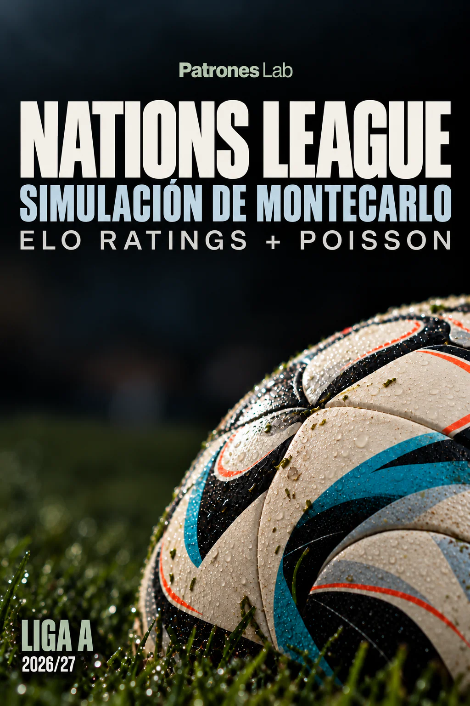

ANALÍTICA ESPORTIVA · PROJECTE 19

Projecte 20 · Analítica de futbol
Simulació i Poisson · Prediccions de la Nations League 2026/27
Simulació d'un milió d'escenaris de la Nations League 2026/27 a partir de valoracions Elo, probabilitats de victòria, empat i derrota, i una distribució de Poisson per simular el nombre de gols de cada partit. L'objectiu és estimar les probabilitats de guanyar el grup, avançar en les eliminatòries i guanyar el títol.
CONTEXT I OBJECTIU
Construir un model probabilístic per estimar com es pot desenvolupar la Lliga A de la Nations League 2026/27, tenint en compte la força competitiva de cada selecció, l'avantatge de jugar com a local i el format del torneig.
L'anàlisi combina valoracions Elo, probabilitats de resultat, simulació de gols i simulació de Montecarlo per estimar les probabilitats de guanyar el grup, avançar en les eliminatòries i guanyar el títol.
Cada actualització incorpora els resultats dels partits ja disputats i permet seguir l'evolució de les probabilitats a mesura que avança la competició.
MODEL I SIMULACIÓ
Força relativa i probabilitats de partit
Les valoracions Elo representen la força relativa de cada selecció a partir dels resultats. Per a cada partit, el model utilitza la diferència entre les dues valoracions i incorpora l'avantatge de jugar com a local.
Aquestes variables s'integren mitjançant un model de Davidson, que transforma la força relativa de les seleccions en tres probabilitats per a cada partit: victòria local, empat i victòria visitant.
Model de Davidson
d=Elo_L+h-Elo_V
r=10^{d/400}
\begin{aligned}P(L)&=\frac{r}{r+1+\nu\sqrt{r}}\\[6pt]P(E)&=\frac{\nu\sqrt{r}}{r+1+\nu\sqrt{r}}\\[6pt]P(V)&=\frac{1}{r+1+\nu\sqrt{r}}\end{aligned}
h representa l'avantatge local: 100 punts Elo en partits no neutrals i 0 en seus neutrals. ν és el paràmetre d'empat ajustat per màxima versemblança.
El model s'ajusta utilitzant l'historial de partits de la Lliga A, de manera que les probabilitats reflecteixen el comportament observat dins de la mateixa competició.
Simulació de gols amb Poisson
Per a cada partit s'estima un nombre esperat de gols per a totes dues seleccions. A partir d'aquests valors, una distribució de Poisson assigna probabilitats als diferents nombres possibles de gols.
Distribució de Poisson
P(X=k)=\frac{e^{-\lambda}\lambda^k}{k!}
X representa el nombre de gols, k cada nombre possible i λ el nombre esperat de gols de la selecció per a aquell partit.
Els gols simulats permeten obtenir un resultat concret per a cada partit i calcular punts, diferència de gols i posicions dins dels grups.
Simulació de Montecarlo
El procés complet executa 1.000.000 de simulacions de la competició. Els resultats dels partits ja disputats es mantenen fixos i els pendents se simulen des de la fase de grups fins a la proclamació del campió.
En cada escenari es calculen els punts, les posicions i els criteris de desempat dels grups. Les seleccions classificades avancen pels quarts de final, les semifinals i la final, incloent-hi pròrroga i penals quan correspon.
La probabilitat de cada esdeveniment s'obté de la freqüència amb què apareix dins del conjunt total de simulacions.
Probabilitat estimada per simulació
P(A)\approx\frac{N_A}{N}
N=1\,000\,000
NA representa el nombre de simulacions en què es produeix l'esdeveniment analitzat.
Aquest procediment permet estimar les probabilitats de guanyar el grup, arribar a quarts de final, semifinals i final, i guanyar el títol.
LLIURAMENT I APRENENTATGE
Els resultats consoliden les probabilitats de cada selecció de guanyar el grup, arribar a quarts de final, semifinals i final, i guanyar el títol.
L'anàlisi incorpora distribucions de punts, posicions i possibles encreuaments, cosa que permet comparar els diferents escenaris que sorgeixen del milió de simulacions.
Cada actualització incorpora els nous resultats, torna a executar la simulació i conserva l'historial de probabilitats. Aquest seguiment permet observar com evolucionen les opcions de cada selecció a mesura que avança la Nations League.
El projecte integra preparació de dades, valoracions Elo, modelització de probabilitats amb Davidson, simulació de gols amb Poisson i simulació de Montecarlo dins d'un procés reproduïble i actualitzable.
GALERIA